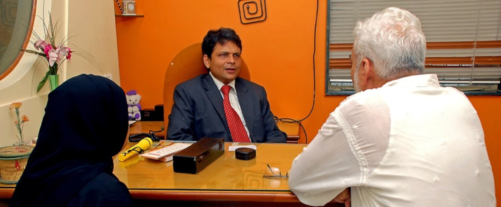
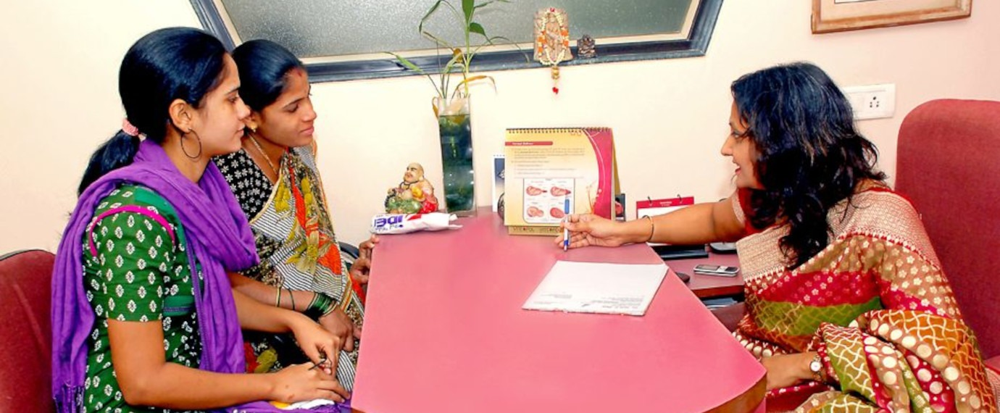
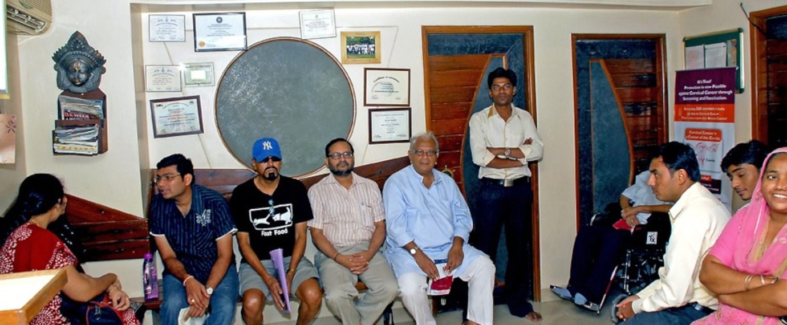

About
Compassionate Eye & Gynaecology Care Since 2002
Maa Nursing Home and NetraJyoti Eyecare Centre is one of the leading super-speciality hospitals in Mumbai’s western suburbs, offering advanced eye care and comprehensive gynaecology services. Built on the values of accessibility, affordability and service-before-self, the centre continues to uplift thousands of families with world-class medical expertise.



About Maa Nursing Home & NetraJyoti Eyecare Centre
Established in 2002, the hospital provides treatment for cataracts, glaucoma, squint disorders, paediatric ophthalmology, oculoplasty, retina care, infertility treatment and obstetrics. It houses advanced LASIK facilities and a dedicated Infertility Clinic. Accredited with NABH and ISO 9001-2015, the hospital is also a government-approved centre for Keratoplasty (Eye Donation Surgery).
Successful Eye & Gynaecology Treatments
Delivering quality care across all departments
Patient Satisfaction
Based on consistent long-term feedback
Our Mission
To eradicate treatable eye diseases across all sections of society and bring the joy of parenthood to families through affordable infertility treatment.
Our Vision
To provide accessible and affordable high-quality clinical care, ensuring that every patient receives world-class treatment close to home.
Our Legacy
Inspired by Dr G.K. Savla’s philosophy of “service before self,” the hospital continues to uphold compassion, integrity and excellence in every aspect of care.
Areas of Excellence
Comprehensive expertise across multiple super-specialities